기계설계산업기사 (2010-03-07 기출문제)
1과목: 기계가공법 및 안전관리
1. 일감과 공구가 모두 회전하면서 절삭하는 공작기계는?
- 선반(Lathe)
- 밀링머신(MiIIing machine)
- 드릴링 머신(DriIIing machine)
- 원통 연삭기(CyIindricaI grinding machine)
(정답률: 82%)

2. 버핑의 사용 목적이 아닌 것은?
- 공작물의 표면을 광택내기 위하여
- 공작물의 표면을 매끈하게 하기 위하여
- 정밀도를 요하는 가공보다 외관을 좋게하기 위하여
- 폴리싱을 하기 전에 공작물 표면을 다듬질하기 위하여
(정답률: 59%)
3. 윤활제의 구비조건이 될 수 없는 것은?
- 사용 상태에서 충분한 점를 유지할 것
- 한계 윤활 상태에서 견딜 수 없는 유성이 있을 것
- 산화나 열에 대하여 안정성이 높을 것
- 화학적으로 불활성이며 깨끗하고 균질 할 것
(정답률: 87%)
4. 브로치머신의 절삭공구인 브로치의 구조의 해당되지 않는 것은?
- 자루부
- 절삭부
- 안내부
- 경사부
(정답률: 56%)
5. 직업병의 발생원인과 가장 관계가 먼 것은?
- 분진
- 유해가스
- 공장규모
- 소음
(정답률: 90%)
6. 각도 측정기인 오토 고리메이터(auto-collimator)의 주요 부품에 해당하지 않는 것은?
- 폴리건 프리즘
- 변압기
- 펜터 프리즘
- 접촉시 프로브
(정답률: 48%)
7. 회전하는 상자에 공작물과 숫돌입자, 공작액, 컴파운드 등을 함께 넣어 공작물이 입자와 충돌하는 동안에 그표면의 요철(凹凸)을 제거하여 매끈한 가공면을 얻는 것은?
- 숏피닝
- 슈퍼피니싱
- 버니싱
- 배럴가공
(정답률: 63%)
8. 드라이버 사용 시 유의사항으로 맞지 않는 것은?
- 드라이버 날 끝이 홈이 폭과 길이가 같은 것을 사용한다.
- 드라이버 날 끝이 수평이어야 하며 둥글거나 빠진 것은 사용하지 않는다.
- 작은 공작물은 한손으로 잡고 사용한다.
- 전기 작업 시 금속 부분이 자루 밖으로 나와 있지 않은 절연된 자루를 사용한다.
(정답률: 79%)
9. 절삭저항의 3분력에 해당되지 않는 것은?
- 표면분력
- 주분력
- 이송분력
- 배분력
(정답률: 84%)
10. 수기가공에서 수나사를 가공하는 공구는?
- 탭
- 리머
- 다이스
- 스크레이퍼
(정답률: 73%)
11. 공기 마이크로미터의 장점에 대한 설명으로 잘못된 것은?
- 배율이 높다.
- 타원, 테이퍼, 편심 등의 측정을 간단히 할 수 있다.
- 내경 측정에 있어 정도가 높은 측정을 할 수 있다.
- 비교측정기가 아니기 때문에 마스터는 필요 없다.
(정답률: 78%)
12. 보링 머신에서 가공이 가능한 방법이 아닌 것은?
- 드릴링
- 리밍
- 태핑
- 그라인딩
(정답률: 76%)
13. 밀링 절삭작업에서 떨림(chattering)이 생기는 이유가 아닌 것은?
- 공작물의 길이가 짧을 때
- 바이트의 날끝이 불량할 떄
- 절삭속도가 부적당할 때
- 공작물의 고정이 불량할 떄
(정답률: 79%)
14. 밀링에서 상향절삭과 비교하여 하향절삭 작업의 장점에 대한 설명이다. 틀린 것은?
- 표면거칠기가 좋다.
- 공구의 수명이 길다.
- 가공물의 고정이 유리하다.
- 백 래시를 제거하지 않아도 된다.
(정답률: 72%)
15. 연삭가공의 특징으로 옳지 않은 것은?
- 경화된 강과 같은 단단한 재료를 가공할 수 있다.
- 가공물과 접촉하는 연삭점의 온도가 비교적 낮다.
- 정밀도가 높고 표면 거칠기가 우수한 다듬질 면을 얻을 수 있다.
- 숫돌 입자는 마모되면 탈락하고 새로운 입자가 생기는 자생작용이 있다.
(정답률: 71%)
16. 주철과 같이 메짐이 있는 재료를 저속으로 절삭할 때 발생되는 일반적인 칩의 형태는?
- 전단형
- 경작형
- 균열형
- 유동형
(정답률: 50%)
17. 다음 중 금속 귀환장치가 있는 기계는?
- 셰이퍼
- 지그보링 머신
- 미링
- 호빙머신
(정답률: 67%)
18. 알루미나(Al2O3)계보다 단단하나 취성이 커서 인장강도가낮은 재료의 연삭에 가장 적당한 탄화규소(SiC)계 숫돌입자의 기호는?
- A
- C
- WA
- GC
(정답률: 46%)
19. 보조 프로그램 호출시 사용되는 보조기능은?
- M00
- M01
- M98
- M99
(정답률: 62%)
20. 센터리스 연삭기에 대한 설명이다. 잘못 설명한 것은?
- 가공물을 연속적으로 가공하기가 곤란하다.
- 연삭 깊이는 거친 연삭의 경우 0.2mm 정도이다.
- 일반적으로 조정 숫돌은 연삭축에 대하여 경사시켜 가공한다.
- 가늘고 긴 공작물을 센터나 척으로 지지하지 않고 가공한다.
(정답률: 58%)
2과목: 기계제도
21. 그림과 같은 원뿔의 전개도에서 중심각 θ은 몇 도 인가?
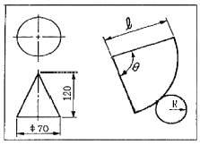
- θ = 100.8°
- θ = 1⑤.0°
- θ = 90.7°
- θ = 210.0°
(정답률: 45%)
22. 그림과 같은 T형강의 표시방법이 바르개 된 것은?
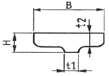
- T B x H x t1 x t2 - L
- T B x H x t1 - t2 -L
- T B x H - t2 -t1 -L
- T H- B - t2 - t1 L
(정답률: 74%)
23. 제3각 정투상도로 투상된 그림과 같은 정면도와 우측면도가 있은 때 평면도로 적합한 것은?
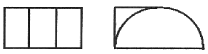
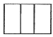
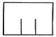
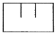
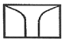
(정답률: 65%)
24. SPP로 나타내는 재질의 명칭은 어떤 것인가?
- 일반 구조용 탄소강관
- 냉간 압연 강재
- 인반 배관용 탄소강관
- 보일러용 압연 강재
(정답률: 53%)
25. V-블록을 제3각법으로 정투상한 그림과 같은 도면에서 A 부분의 치수는?
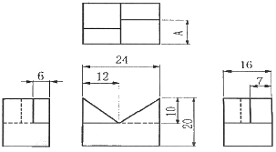
- 6
- 7
- 9
- 10
(정답률: 86%)
26. 가공에 의한 컷의 줄무늬가 기호를 기입한 면의 중심에 대하여 거의 방사 모양이라는 의미를 지닌 기호는?
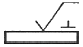
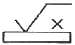
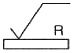
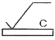
(정답률: 70%)
27. 그림과 같이 형상공차로 표시된 것의 뜻은?
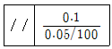
- 구분구간 100mm에 대하여는 0.⑤mm, 전체길이에 대하여는 0.1mm의 평행도
- 전체길이 100mm에 대하여는 0.⑤mm, 100mm 이하일 경우에는 0.1mm의 평행도
- 전체길이 100mm에 대하여는 0.⑤mm, 구분 구간은 0.1mm의 평행도
- 구분 구간에서 0.⑤/100mm, 전체 길이에 대하여 0.1mm 평행도
(정답률: 67%)
28. 헐거운 끼워 맞춤의 설명으로 틀린 것은?
- 항상 틈새가 생긴다.
- 구멍의 최대 치수에서 축의 최소 치수를 뺀 값이 최대 틈새이다.
- 축의 최대 치수에서 구멍의 최대 치수를 뺀 값이 최대 죔새이다.
- 구멍의 최소 치수에서 축의 최대 치수를 뺀 값이 최소 틈새이다.
(정답률: 71%)
29. 화살표 방향을 정면으로 하는 그림과 같은 입체도를 제3각법으로 정투상한 도면으로 올바르게 나타낸 것은?
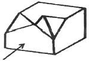
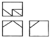
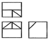
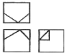
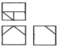
(정답률: 80%)
30. 그림과 같은 제3각 정투상도(정면도, 평면도, 죄측면도)에서 미완성된 좌측면도로 가장 적합한 것은?
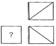
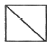
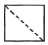
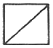
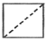
(정답률: 48%)
31. 기계 재료 중 기계 구조용 탄소 강재에 해당하는 것은?
- SS 400
- SCr 410
- SM 40C
- SCS 55
(정답률: 85%)
32. KS 용접 기호 중 현장 용접을 뜻하는 것은?
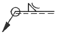
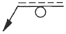
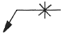
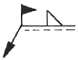
(정답률: 82%)
33. 기계제도의 재료 기호 STC는 다음 중 어느 것은 나타내는가?
- 일반 구조용 압연 강재
- 기계 구조용 탄소 강재
- 탄소 공구강 강재
- 합금 공구강 강재
(정답률: 72%)
34. 그림과 같은 원형축 형상에서 기호표시란 (Y)에 들어갈 수 있는 기하 공차로 가장 적합한 것은?
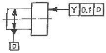
- ○
- ∠
- ↗
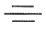
(정답률: 56%)
35. 제3각법으로 투상한 정면도와 우측면도가 그림과 같을 때 평면도로 가장 적합한 것은?
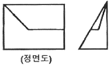
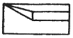
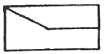
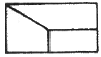
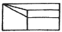
(정답률: 71%)
36. 줄 다듬질 가공을 나타내는 약호는?
- FL
- FF
- FS
- FR
(정답률: 72%)
37. 기준치수 42mm, 위 치수허용차 값이 -0.009mm, 치수공차 값이 0.016mm일 때 최소 허용 치수는?
- 41.001mm
- 41.975mm
- 41.984mm
- 41.993mm
(정답률: 61%)
38. 그림과 같은 도면의 해독으로 틀린 것은?
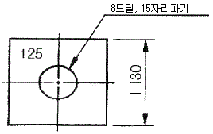
- 드릴 구멍의 지름이 25mm이다.
- 정사각형의 한 변의 길이가 30mm이다.
- 판의 두께가 25mm이다.
- 구멍의 깊이가 15mm이다.
(정답률: 76%)
39. 기어의 제도에 대하여 설명한 것으로 잘못된 것은?
- 잇봉우리원은 굵은 실선으로 표시한다.
- 피치원은 가는 1점 쇄선으로 표시한다.
- 이골원은 가는 실선으로 표시한다.
- 잇줄방향은 통상 3개의 가는 1점 쇄선으로 표시한다.
(정답률: 75%)
40. 스퍼기어에서 피치원의 지름이 150mm이고, 잇수가 50일 때 모듈(module)은?
- 5
- 4
- 3
- 2
(정답률: 86%)
3과목: 기계설계 및 기계재료
41. 탄소강에서 공석강의 현미경 조직은?
- 초석페라이트와 펄라이트
- 초석시멘타이트와 펄라이트
- 층상펄라이트와 시멘타이트의 혼합조직
- 공석 페라이트와 공석 시멘타이트의 혼합조직
(정답률: 53%)
42. 담금질 효과와 가장 관련이 적은 것은?
- 가열온도
- 냉각속도
- 자성
- 결정입도
(정답률: 76%)
43. 순철에 대한 설명으로 잘못된 것은?
- 투자율이 높아 변압기, 발전기용으로 사용된다.
- 단접이 용이하고, 용접성도 좋다.
- 바닷물, 화확약품 등에 대한 내식성이 좋다.
- 고온에서 산화작용이 심하다.
(정답률: 65%)
44. 6:4황동에 1~2%Fe을 첨가한 것으로, 강도가 크고 내식성이 좋아서 광산기계, 선반용 기계, 화학 기계등에 사용하는 황동은?
- 에드미럴티 황동
- 네이벌황동
- 델타메탈
- 톰백
(정답률: 52%)
45. 회주철(grey cast iron)의 조직에 가장 큰 영향을 주는 것은?
- C와 Si
- Si와 Mn
- Si와 S
- Ti와 P
(정답률: 61%)
46. 풀림 처리의 목적으로 가장 적합한 것은?
- 연화 및 내부응력 제거
- 경도의 증가
- 조직의 오스테나이트화
- 표면의 경화
(정답률: 62%)
47. 담금질 조직 중 가장 경도가 높은 것은?
- 펄라이트
- 마텐자이트
- 솔바이트
- 트루스타이트
(정답률: 73%)
48. 다음 구조용 복합재료 중 섬유강화 금속은?
- FRTP
- SPF
- FRM
- FRP
(정답률: 72%)
49. 다음 중 합금이 아닌 것은?
- 니켈
- 황동
- 두랄루민
- 켈밋
(정답률: 70%)
50. 연강의 사용 용도로 적합하지 않은 것은?
- 볼트
- 리벳
- 파이프
- 게이지
(정답률: 60%)
51. 다음 마찰자 중 무단(無段)변속장치로 이용할 수 없는 것은?
- 홈 마찰자
- 에반스 마찰자
- 원판 마찰자
- 구면 마찰자
(정답률: 45%)
52. 400rpm으로 전동축으로 지지하고 있는 미끄럼 베어링에서 저널의 지름 d=6cm, 저널의 길이 ℓ=10cm이고, 4.2kN의 레이디얼 하중이 작용할 때, 베어링 압력은 몇 MPa인가?
- 0.5
- 0.6
- 0.7
- 0.8
(정답률: 44%)
53. 지름 60mm의 강축에 350rpm으로 50kW를 전달하려고 할 때 허용전단응력을 고려하여 적용 가능한 묻힘 키(sunk key)의 최소 길이(ℓ)는 약 몇 mm인가? (단, 키의 허용전단응력 τ=40[N/mm2], 키의 규격(폭×높이) b×h=12mm×10mm이다.)(오류 신고가 접수된 문제입니다. 반드시 정답과 해설을 확인하시기 바랍니다.)
- 80
- 85
- 90
- 95
(정답률: 29%)
54. SI단위와 기호로 잘못 짝지어진 것은?
- 주파수-헤르츠(Hz)
- 에너지-줄(J)
- 전기량, 전하-와트(W)
- 전기저항-옴(Ω)
(정답률: 61%)
55. 지름 5cm의 축이 300rpm으로 회전할 때 최대로 전달할 수 있는 동력은 약 몇 kW인가? (단, 축의 허용비틀림응력은 39.2MPa이다.)
- 8.59
- 16.84
- 30.23
- 181.38
(정답률: 36%)
56. 역류를 방지하여 유체를 한쪽 방향으로만 흘러가게 하는 밸브(valve)로 적합한 것은?
- 체크 밸브
- 감압 밸브
- 시퀀스 밸브
- 언로드 밸브
(정답률: 78%)
57. 나사를 용도에 따라 체결용과 운동용으로 분류할 때 운동용 나사에 속하지 않는 것은?
- 사각 나사
- 사다리꼴 나사
- 톱니 나사
- 삼각 나사
(정답률: 54%)
58. 스플라인에 대한 설명으로 틀린 것은?
- 축에 여러 개의 같은 키 홈을 파서 여기에 맞는 한 짝의 보스 부분을 만들어 축방향으로 서로 미끄러져 운동할 수 있게 한 것이다.
- 종류에는 각형 스플라인, 헬리컬 스플라인, 세리이션 등이 있다.
- 용도는 주로 변속장치, 자동차 변속기 등의 속도변화용 축에 사용된다.
- 키 보다 큰 토크를 전달할 수 있다.
(정답률: 47%)
59. 10kN의 하중을 올리는 나사 잭의 나사 막대의 지름을 몇 mm로 하면 가장 적당한가? (단, 나사막대의 허용응력은 60MPa로 하고, 비틀림 응력은 수직응력의 1/3 정도로 본다.)
- 12mm
- 18mm
- 22mm
- 25mm
(정답률: 26%)
60. 기본 부하용량이33000N이고, 베어링하중이 4000N인 불베어링이 900rpm로 회전할 때, 베어링의 수명시간은 약 몇 시간인가?
- 9⑤0
- 9500
- 10400
- 11500
(정답률: 44%)
4과목: 컴퓨터응용설계
61. 주어진 양 끝점만 통과하고 중간의 점은 조정점의 영향에 따라 근사하고 부드럽게 연결되는 선은?
- Bezier 곡선
- Spline 곡선
- Polygonal line
- 퍼거슨 곡선
(정답률: 53%)
62. CAD 용어에 대한 설명 중 틀린 것은?
- Pan:도면의 다른 영역을 보기 위해 디스플레이 윈도를 이동시키는 행위
- Zoom:화면상의 이미지를 실제 사이즈를 포함하여 확대 또는 축소
- Clipping:필요없는 요소를 제거하는 방법, 주로 그래픽에서 클리핑 윈도로 정의된 영역 밖에 존재하는 요소들을 제거하는 것을 의미
- Toggle:명령의 실행 또는 마우스 클릭시마다 On 또는 Off가 번갈아 나타나는 세팅
(정답률: 70%)
63. 컴퓨터에서 최소의 입출력 단위로 물리적으로 읽기를 할 수 있는 레코드에 해당하는 것은?
- Blok
- field
- word
- bit
(정답률: 54%)
64. CAD에서 사용되는 입력장치에 해당하는 않는 것은?
- 마우스(mouse)
- 트랙볼(track ball)
- 플라즈마 디스플레이 패널(plasma display panel)
- 라이트펜(light pen)
(정답률: 75%)
65. 핵과 열이 각각 m 행과 n 열을 가지면 m×n 행렬이라고 한다. 3×2 행렬과 2×3 행렬을 서로 곱했을 때 그 결과의 행렬(matrix)에서 행(row)의 개수는?
- 2
- 3
- 4
- 6
(정답률: 58%)
66. CAD 소프트웨어에서 명령어를 아이콘으로 만들어 아이템별로 묶어 명령을 편리하게 이용할 수 있도록 한 것은?
- 툴바
- 스크롤바
- 스크린메뉴
- 풀다운메뉴바
(정답률: 81%)
67. 컴퓨터 그래픽의 기본 요소(PRIMTIVE) 중 3차원 프리미티브에 해당되지 않는 것은?
- 구(sphere)
- 관(tube)
- 원통(cylinder)
- 직선(line)
(정답률: 71%)
68. CAD 시스템의 구성 요소인 모니터와 관련하여 Rersdh라는 용어에 의해서 일어나는 현상과 가장 관계가 가까운 것은?
- Flicker 현상
- Zoom 현상
- Cathode 현상
- Compound 현상
(정답률: 66%)
69. 곡면(surface)으로 기하학적 형상을 정의하는 과정에서 곡면 구성 종류가 아닌 것은?
- 쿤스 곡면(Coons surface)
- 회전 곡면(Revolved surface)
- 베지어 곡면(Bezier surface)
- 트위스트 곡면(Twist surface)
(정답률: 55%)
70. 솔리드 모델의 CSG 표현 방식에 대한 설명으로 거리가 먼 것은?
- 기본 입체의 조합으로 물체를 표현한다.
- 불 연산(Boolean operation)을 이용한다.
- B-rep 표현방식에 대비하여 전개도 작성이 쉽다.
- 중량계산을 할 수 있다.
(정답률: 58%)
71. 이진법 1011을 십진법으로 계산하면 얼마인가?
- 2
- 4
- 8
- 11
(정답률: 71%)
72. 솔리드 모델(solid model)의 특징 설명으로 틀린 것은?
- 두 모델간의 간섭체크가 용이하다.
- 물리적 성질 등의 계산이 가능하다.
- 이동ㆍ회전 등을 통한 정확한 형상 파악이 곤란하다.
- 컴퓨터의 메모리 용량이 많아진다.
(정답률: 72%)
73. 다음 설명의 특징을 가진 곡면에 해당하는 것은?
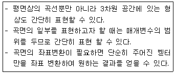
- 원추(Cone)곡면
- 퍼거슨(Ferguson)곡면
- 베지어(Bezier)곡면
- 스플라인(Spline)곡면
(정답률: 59%)
74. f(x, y)=ax2+bxy+cy2+dx+ey+g=0식에 표시된 계수에 의해서 정의되는 도형으로 옳은 것은?
- 원:b=0, a=c
- 타원:b2-4ac＞0
- 포물선:b2-4ac≠0
- 쌍곡선:b2-4ac＜0
(정답률: 52%)
75. DXF(Data Exchange File) 파일의 섹션 구성에 해당되지 않는 것은?
- header section
- library section
- tablse section
- entities section
(정답률: 55%)
76. 기하학적 형상 Modeling에서 B-spline 곡선의 성질 중 곡선상에 있는 몇 개의 점을 알고 있을 때 그에 따른 B-spline 곡선의 조정점을 구할 수 있는데 이를 무엇이라 하는가?
- 연속성
- 역변환(inverse transform)
- convex hull property
- 곡선 조정
(정답률: 43%)
77. 원의 중심점을 (x, yc)라 할 때 원의 방정식 표현으로 올바른 것은? (단, r은 원의 반지름이다.)
- (x+xc)2+(y+yc)2=r2
- (x-xc)2+(y-yc)2=r
- (x+xc)2+(y+yc)2=r
- (x-xc)2+(y-yc)2=r2
(정답률: 45%)
78. 솔리드모델링에서 기본형상의 불 연산방법이 아닌 것은?
- 합집합
- 차집합
- 곱집합
- 교집합
(정답률: 75%)
79. 와이어 프레임 모델의 장점에 해당하지 않는 것은?
- 데이터의 구조가 간단하다.
- 모델 작성이 용이하다.
- 투시도의 작성이 용이하다.
- 물리적 성질(질량)의 계산이 가능하다.
(정답률: 75%)
80. 다음 식은 3차원 공간 상에서의 좌표변환시 x축을 중심으로 θ만큼 회전하는 행렬식(matrix)을 나타낸다. (X)에 알맞은 값은?
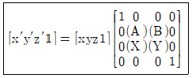
- sin θ
- -sin θ
- cos θ
- -cos θ
(정답률: 51%)